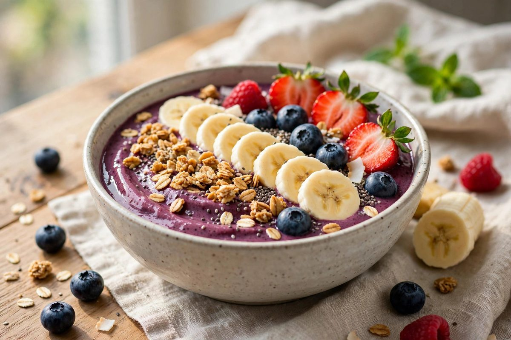

Home » Guides
Breakfast Smoothies

A breakfast smoothie can be a fast, filling start to the day, but only if it is built like a meal. A smoothie made only from fruit and juice will leave you hungry within an hour, because it has little protein, fat, or fibre. A good breakfast smoothie combines fruit with protein, fibre, and healthy fat, so it keeps you full until lunch. This guide explains how to build a breakfast smoothie that works, gives recipes for busy mornings, and shows how to prepare them ahead of time.
What makes a good breakfast smoothie
A filling breakfast smoothie needs four things: fruit for flavour and vitamins, protein to keep you full, fibre to slow digestion, and a little healthy fat for staying power. Protein can come from Greek yoghurt, milk, or protein powder. Fibre comes from oats, chia seeds, or flaxseed. Fat comes from nut butter, avocado, or seeds. Aim for roughly 300 to 400 calories, with at least fifteen grams of protein and five grams of fibre. A smoothie that meets those numbers will keep most people full for three to four hours.
Three filling recipes
The oat and banana breakfast smoothie blends one banana, 40 grams of oats, 150 grams of Greek yoghurt, 200 millilitres of milk, and a teaspoon of honey. It has about 380 calories and 20 grams of protein. The peanut butter breakfast smoothie blends one banana, one tablespoon of peanut butter, 150 grams of Greek yoghurt, 200 millilitres of milk, and a handful of ice, for about 400 calories and 22 grams of protein. The berry breakfast smoothie blends a cup of mixed berries, 40 grams of oats, 150 grams of Greek yoghurt, and 200 millilitres of milk, for about 350 calories and 18 grams of protein.
Preparing breakfast smoothies ahead
Mornings are easier if you prepare the night before. Pack the dry ingredients and frozen fruit into a bag or jar, and keep it in the freezer. In the morning, tip the bag into the blender, add milk or yoghurt, and blend for a minute. You can also blend the smoothie the night before and keep it in a sealed jar in the fridge, but it is best within twelve hours, and you should shake it well before drinking. Avoid adding oats the night before if you want a thinner texture, because oats absorb liquid and thicken overnight.
Breakfast smoothie mistakes
The most common mistake is making a smoothie that is too small or too low in protein, so you are hungry again by mid-morning. Another is adding fruit juice, which adds sugar without fibre. Using too much honey or sweetened yoghurt is a third mistake: a teaspoon of honey is enough, and plain yoghurt is better than flavoured. Finally, do not forget to chew something: eating a piece of toast or a handful of nuts alongside a smoothie helps you feel satisfied, because chewing is part of feeling full.
A week of breakfast smoothies
Planning a week of breakfast smoothies stops the morning rush. On Sunday, portion five freezer packs with different fruits and oats, and label each one with the day. Monday could be berry and oat, Tuesday banana and peanut butter, Wednesday tropical, Thursday chocolate, and Friday green. Each morning, tip the pack into the blender, add milk or yoghurt, and blend for a minute. Keep a spare pack in the freezer for days when you run out. This routine takes twenty minutes on Sunday and gives you a filling, healthy breakfast every weekday without thinking.
Frequently Asked Questions
Can a smoothie replace breakfast?
Yes, if it contains protein, fibre, and enough calories — around 300 to 400. A fruit-only smoothie is a snack, not a breakfast.
Is it okay to drink a smoothie every morning?
Yes, as long as you vary the ingredients and still eat whole foods during the rest of the day.
Should I add oats to a breakfast smoothie?
Yes. Oats add fibre and staying power, and they blend well. Use 30 to 40 grams per serving.